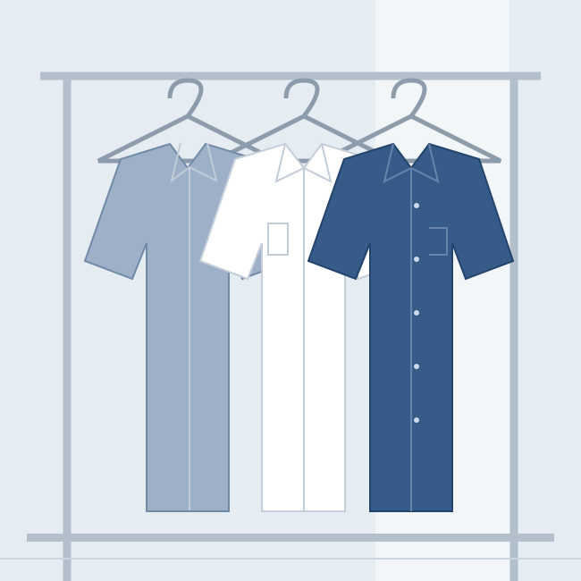

Dry cleaning
Suits, coats and delicates, inspected before treatment.
A FRESH START FOR YOUR FAVOURITES
Life gets creased. We take care of that.
Independent garment care, thoughtful finishing and collection that fits around your day.

01 / YOUR TIME, YOUR TURNAROUND
Estimated calendar-day turnaround assumes acceptance before 9am on an opening day. Specialist items and Sunday collections require a separate quote.
02 / PRICES
Build an example bag.
Prices update with your chosen speed.
03 / A LITTLE LESS TO DO
Example collection and delivery on orders over £20 across RG1, RG2, RG4, RG6, RG30 and RG41.
Weekdays: 8–10am, 12–2pm, 5–7pm.
Saturday: 9–11am, 2–4pm. Sunday: closed.
This local scheduler sends nothing and reserves no collection. Please use example details. Specialist garments are assessed separately.
04 / FROM YOUR WARDROBE TO YOUR HOME
Suits, coats and delicates, inspected before treatment.
Starch to your preference. Folded or on a hanger.
Hems, zips and resizing. Example four-day turnaround.
Specialist partner assessment. Allow two weeks.
Cleaning and storage boxing. Allow twelve working days.
Duvets, curtains and covers, with specialist quotes where needed.
04 SIMPLE STEPS
Choose your collection window.
Tell us about a safe place for your bag.
Inspect, spot-treat and finish by hand.
Freshly covered, ready to wear.
CARE THAT IS CONSIDERED
Careful collars, crisp cuffs and attention to the details.
The brief specifies a silicone-based process. Environmental accreditation and suitability must be confirmed with a real cleaner.
Example policy: bring an unsatisfactory item back within seven days for assessment and a complimentary re-clean.
FOR THE WORKING WARDROBE
Hotels, restaurants and offices. Scheduled collection, itemised monthly invoicing and a named contact.
Draft a business enquiry ↗Example email address; opening your mail app does not send an enquiry.
Tell your cleaner what caused it and when. Removal depends on the fabric and stain; no result is guaranteed here.
The example policy offers an agreed safe place, neighbour or rebooking.
The example service includes storage boxing and takes twelve working days.
Do-not-clean labels, some beaded pieces and imitation leather require careful assessment.
Discuss the provider's actual insurance and claims policy before service. This demo makes no insurance claim.
Agree a safe place directly with your provider. This form does not transmit instructions.
COME ON IN
Mon–Fri 7:30–18:30
Sat 8:30–16:00 · Sun closed
Locations supplied by fictional brief.